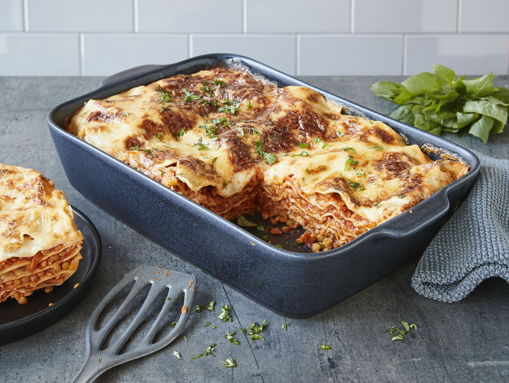

Vegan lasagna

ingredients
- 1 package lasagna noodles
- 4 cups Marinara sauce
- 1 1/2 cups cooked red lentils
- 4 cups fresh spinach
- 1 tablespoon butter
- 1 1/2 cupsa Ricotta
- 1 egg beaten
- salt and pepper
- 1 cup grated Parmesan cheese
- 1/2 cup grated cheddar cheese
- 1/2 cup fresh basil
steps
- Preheat oven to 375F, oil baking dish
- Bring a large pot of salted water to a boil and cook the lasagna noodles according to the package directions. Drain, rinse and cool the noodles.
- Stir the red lentils into the Marinara sauce, then spread a cup of sauce on the base of the baking dish. Top with a quarter of the cooked lasagna noodles.
- Wilt the spinach in a pan with the butter, then chop and add to the ricotta. Crack an egg into the mix and stir to combine. Season with salt and pepper.
- Spread the ricotta mixture over the layer of lasagna noodles. Top with more noodles to cover. Add 2 cups of lentil bolognese, followed by the last of the noodles.
- Top with the remaining lentil bolognese, spreading it evenly over the noodles. Sprinkle the parmesan and cheddar cheese over the top. Arrange the tomato slices on the cheese, then pop the pan in the oven.
- Bake for 35-45 minutes or until the lasagna is bubbling around the edges and the cheese is melted and golden. Remove form oven. Let sit for 15 minutes before slicing and serving.